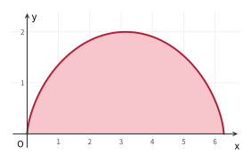

ホーム ＞ 数学III ＞ 定積分と面積・体積
サイクロイド \(x=1(t-\sin t),\ y=1(1-\cos t)\ (0\leqq t\leqq2\pi)\) と \(x\) 軸で囲まれた図形の面積を求めよ。
媒介変数の面積は \(S=\int y\,dx=\int y\dfrac{dx}{dt}dt\)。\(x:0\to2\pi a\) に対応する \(t:0\to2\pi\)。
\[S=\int y\,dx=\int_0^{2\pi}1(1-\cos t)\cdot1(1-\cos t)\,dt\]

\[=1\int_0^{2\pi}(1-2\cos t+\cos^2t)dt=1\int_0^{2\pi}\left(\dfrac32-2\cos t+\dfrac{\cos2t}{2}\right)dt\]
\[=1\cdot\dfrac32\cdot2\pi=3 \pi\]
【答案（テストに書く形）】
答